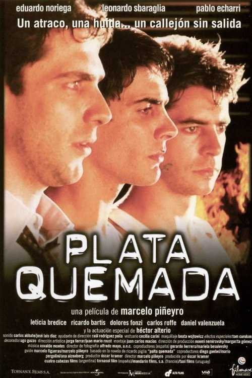

Plata quemada (2000)
Sinopsis Rápida
Un robo a un banco que sale terriblemente mal. ¿Hasta dónde llegará la lealtad entre dos hombres unidos por un crimen y la locura?
Sinopsis Detallada
Plata Quemada nos sumerge en el crudo mundo del hampa argentina de los años 65, siguiendo la explosiva relación entre 'El Nene' y 'Ángel', dos criminales unidos por un sangriento robo a un furgón blindado. La película explora la compleja dinámica de su vínculo, marcado por la lealtad, la paranoia y la creciente locura de Ángel, quien sufre de esquizofrenia. Con una estética visual impactante y una tensión palpable en cada escena, Plata Quemada no solo relata un crimen, sino que desentraña la fragilidad humana y las consecuencias devastadoras de la violencia. La dirección de Marcelo Piñeyro construye un relato visceral y profundamente perturbador que te dejará sin aliento.
¿Por qué tenés que verla?
- Una historia fascinante de lealtad y locura en el submundo criminal.
- La impactante dirección de Marcelo Piñeyro crea una atmósfera opresiva y realista.
- Una película que dejó una marca significativa en el cine argentino por su crudeza y realismo.
- Excelente actuación del elenco principal
Idea Extra
Análisis de la representación de la esquizofrenia en la película y su impacto en la narrativa.
{{CONTENIDO_RELACIONADO}}